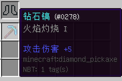

概述
作者在玩MC这款游戏时一直在想：要是挖铁矿出铁，挖金矿出金，那将是一件多么美妙的事。本部分将带领大家，一步一步地制作一个被用于工具的新的附魔：火焰灼烧。
Enchantment类
和附魔相关的类就是Enchantment类，打开Enchantment类，我们可以看到多个已经预设过的附魔种类。
我们先看看Enchantment类的构造方法：
protected Enchantment(int enchID, ResourceLocation enchName, int enchWeight, EnumEnchantmentType enchType)
我们解释一下这个构造方法的四个参数：
enchID指的就是这个附魔的ID，我们看到原版已经定义了很多ID，当新建的ID重复时，游戏会报错。enchName指的就是这个附魔的名称，使用ResourceLocation的方式标记，比如时运就是"minecraft:fortune"，精准采集就是"minecraft:silk_touch"，这个名称和方块、物品的ID是类似的。enchWeight指的就是这个附魔的权重，和修复附魔需要的经验等级成负相关，和通过附魔台得到该种附魔的概率成正相关。enchType表示这种附魔是什么类型的，有武器、工具、弓等多种。
我们注意到，enchID如果重复，游戏会报错，所以我们将这个ID写进配置，使得玩家可以修改它，以免和原版或者某些Mod重复。
src/main/java/com/github/ustc_zzzz/fmltutor/common/ConfigLoader.java（部分）:
public static int diamondBurnTime;
public static int enchantmentFireBurn;
public ConfigLoader(FMLPreInitializationEvent event)
{
logger = event.getModLog();
config = new Configuration(event.getSuggestedConfigurationFile());
config.load();
load();
}
public static void load()
{
logger.info("Started loading config. ");
String comment;
comment = "How many seconds can a diamond burn in a furnace. ";
diamondBurnTime = config.get(Configuration.CATEGORY_GENERAL, "diamondBurnTime", 640, comment).getInt();
comment = "Fire burn enchantment id. ";
enchantmentFireBurn = config.get(Configuration.CATEGORY_GENERAL, "enchantmentFireBurn", 36, comment).getInt();
config.save();
logger.info("Finished loading config. ");
}
然后我们新建包com.github.ustc_zzzz.fmltutor.enchantment，并在其中新建一个文件EnchantmentFireBurn.java：
src/main/java/com/github/ustc_zzzz/fmltutor/enchantment/EnchantmentFireBurn.java
package com.github.ustc_zzzz.fmltutor.enchantment;
import com.github.ustc_zzzz.fmltutor.FMLTutor;
import com.github.ustc_zzzz.fmltutor.common.ConfigLoader;
import net.minecraft.enchantment.Enchantment;
import net.minecraft.enchantment.EnumEnchantmentType;
import net.minecraft.init.Items;
import net.minecraft.item.ItemStack;
import net.minecraft.util.ResourceLocation;
public class EnchantmentFireBurn extends Enchantment
{
public EnchantmentFireBurn()
{
super(ConfigLoader.enchantmentFireBurn, new ResourceLocation(FMLTutor.MODID + ":" + "fire_burn"), 1,
EnumEnchantmentType.DIGGER);
this.setName("fireBurn");
}
@Override
public int getMinEnchantability(int enchantmentLevel)
{
return 15;
}
@Override
public int getMaxEnchantability(int enchantmentLevel)
{
return super.getMinEnchantability(enchantmentLevel) + 50;
}
@Override
public int getMaxLevel()
{
return 1;
}
@Override
public boolean canApplyTogether(Enchantment ench)
{
return super.canApplyTogether(ench) && ench.effectId != silkTouch.effectId && ench.effectId != fortune.effectId;
}
@Override
public boolean canApply(ItemStack stack)
{
return stack.getItem() == Items.shears ? true : super.canApply(stack);
}
}
setName方法的作用和方块、物品等的setUnlocalizedName方法类似，我们修改一下语言文件：
src/main/resources/assets/fmltutor/lang/en_US.lang（部分）:
enchantment.fireBurn=Fire Burning
src/main/resources/assets/fmltutor/lang/zh_CN.lang（部分）:
enchantment.fireBurn=火焰灼烧
getMinEnchantability和getMaxEnchantability方法的作用就是获取可以获取到此附魔的最低等级和最高等级。这里被设置成了和精准采集相同。
getMaxLevel方法指的就是这个附魔的最大等级了。自然，这个附魔只应该有一个等级。
canApplyTogether方法表示的是这个附魔可否与其他附魔共存。这里设定为不能和精准采集和时运共存。
canApply方法表示的是这个附魔可以作用的物品。既然是一个作用于工具的附魔，自然作用对象是所有工具和剪刀。
然后我们在com.github.ustc_zzzz.fmltutor.enchantment包下新建EnchantmentLoader.java文件，完成对这个附魔属性的注册：
src/main/java/com/github/ustc_zzzz/fmltutor/enchantment/EnchantmentLoader.java
package com.github.ustc_zzzz.fmltutor.enchantment;
import com.github.ustc_zzzz.fmltutor.common.ConfigLoader;
import net.minecraft.enchantment.Enchantment;
public class EnchantmentLoader
{
public static Enchantment fireBurn;
public EnchantmentLoader()
{
try
{
fireBurn = new EnchantmentFireBurn();
Enchantment.addToBookList(fireBurn);
}
catch (Exception e)
{
ConfigLoader.logger().error(
"Duplicate or illegal enchantment id: {}, the registry of class '{}' will be skipped. ",
ConfigLoader.enchantmentFireBurn, EnchantmentFireBurn.class.getName());
}
}
}
这里对该种附魔进行注册，如果ID重复，则输出错误信息。
addToBookList方法使得该附魔被注册，使其在附魔台上可以被注册到，在创造模式物品栏上也可以找到对应的附魔书。
下面是一张拥有此种附魔的钻石镐示例：

完善你的附魔
为了使我们的附魔可以产生作用，我们需要在特定的地方监听事件，以使这个附魔产生作用：
src/main/java/com/github/ustc_zzzz/fmltutor/common/EventLoader.java（部分）:
@SubscribeEvent
public void onBlockHarvestDrops(BlockEvent.HarvestDropsEvent event)
{
if (!event.world.isRemote && event.harvester != null)
{
ItemStack itemStack = event.harvester.getHeldItem();
if (EnchantmentHelper.getEnchantmentLevel(EnchantmentLoader.fireBurn.effectId, itemStack) > 0
&& itemStack.getItem() != Items.shears)
{
for (int i = 0; i < event.drops.size(); ++i)
{
ItemStack stack = event.drops.get(i);
ItemStack newStack = FurnaceRecipes.instance().getSmeltingResult(stack);
if (newStack != null)
{
newStack = newStack.copy();
newStack.stackSize = stack.stackSize;
event.drops.set(i, newStack);
}
else if (stack != null)
{
Block block = Block.getBlockFromItem(stack.getItem());
boolean b = (block == null);
if (!b && (block.isFlammable(event.world, event.pos, EnumFacing.DOWN)
|| block.isFlammable(event.world, event.pos, EnumFacing.EAST)
|| block.isFlammable(event.world, event.pos, EnumFacing.NORTH)
|| block.isFlammable(event.world, event.pos, EnumFacing.SOUTH)
|| block.isFlammable(event.world, event.pos, EnumFacing.UP)
|| block.isFlammable(event.world, event.pos, EnumFacing.WEST)))
{
event.drops.remove(i);
}
}
}
}
}
}
我们监听了方块被挖掘后即将掉落物品的事件，在玩家手持存在“火焰灼烧”附魔的工具时，将其换成被灼烧过的物品掉落。
最后在CommonProxy中注册：
src/main/java/com/github/ustc_zzzz/fmltutor/common/CommonProxy.java（部分）:
public void init(FMLInitializationEvent event)
{
new CraftingLoader();
new EnchantmentLoader();
new EventLoader();
}
打开游戏试试吧～